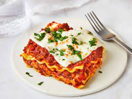

"We live in St. Louis where we have fabulous Italian food," says meyerrachelle. "This lasagna could've come from any of the well-known restaurants in our area. My family was raving about it! The sauce is absolutely amazing! This is definitely a keeper! It lives up to its name." "The sweet Italian sausage and ground beef combo along with the sauce were very flavorful," says one Allrecipes community member. "Yeah it may take a while but it is so worth it. Team it with garlic bread and a salad and you'll be very satisfied." "Absolutely phenomenal," raves Amanda Simopoulos. "Fair warning: once you've made this, going back to a frozen lasagna will be impossible. It is somewhat time consuming but not difficult. My house smells delectable every time I make it!
Making lasagna can be time-consuming, but the results are well worth the wait. You'll find a detailed ingredient list and step-by-step instructions in the recipe below, but let's go over the basics:
The Allrecipes community adores this lasagna recipe because it's incredibly customizable, so you can easily alter the ingredient list to suit your needs. If you want to stay true to the original recipe, though, these are the ingredients you'll need to add to your grocery list:
Here's a very brief overview of what you can expect when you make homemade lasagna: